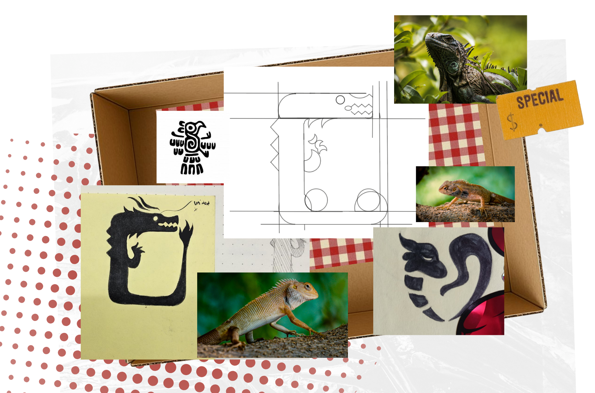
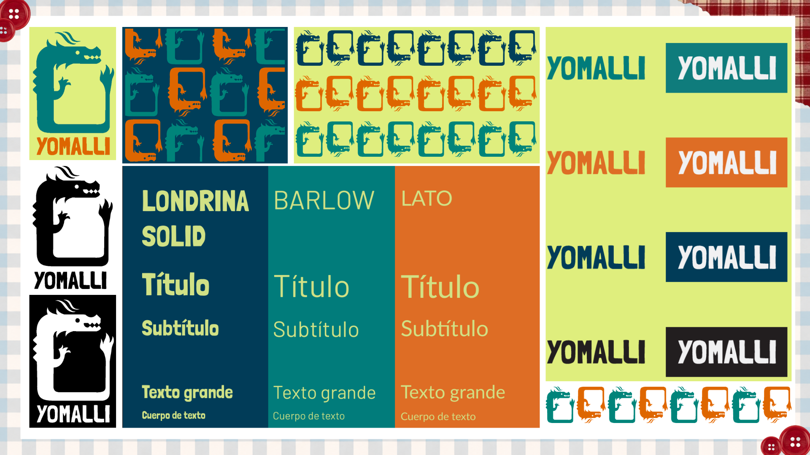
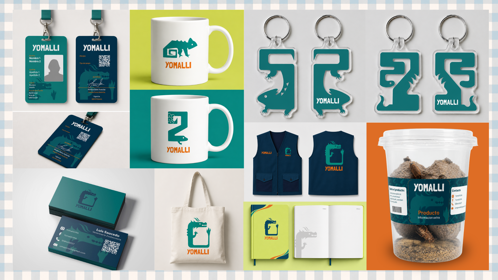
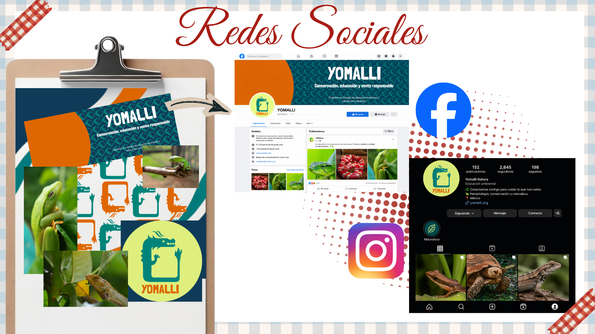
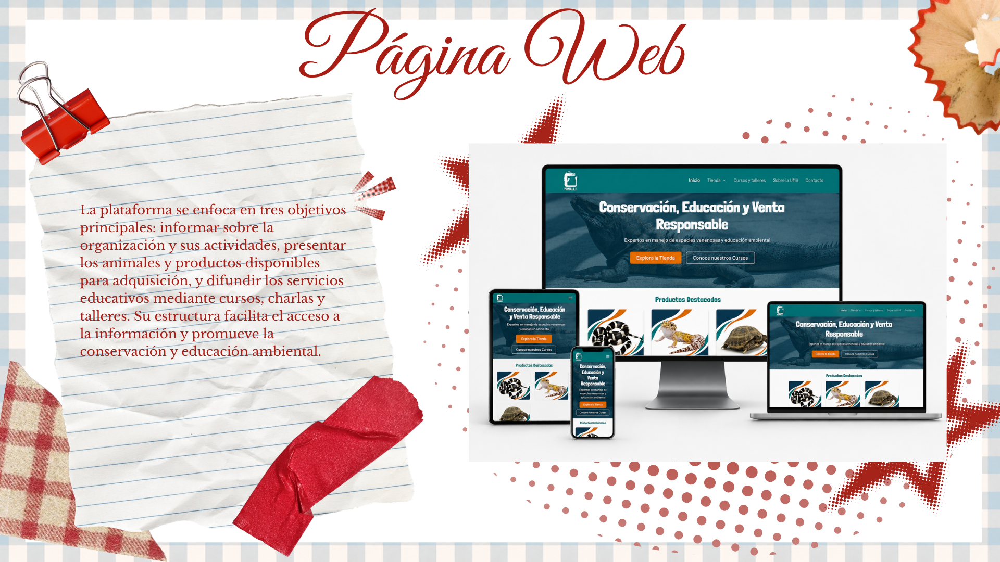
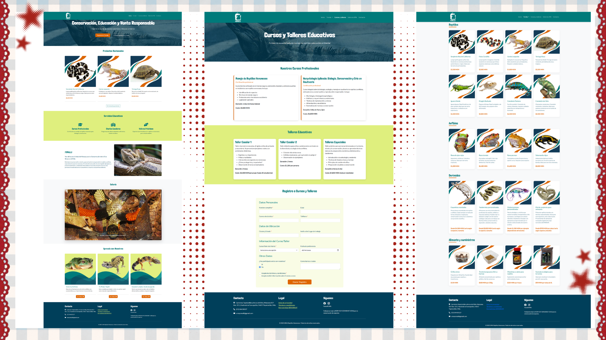
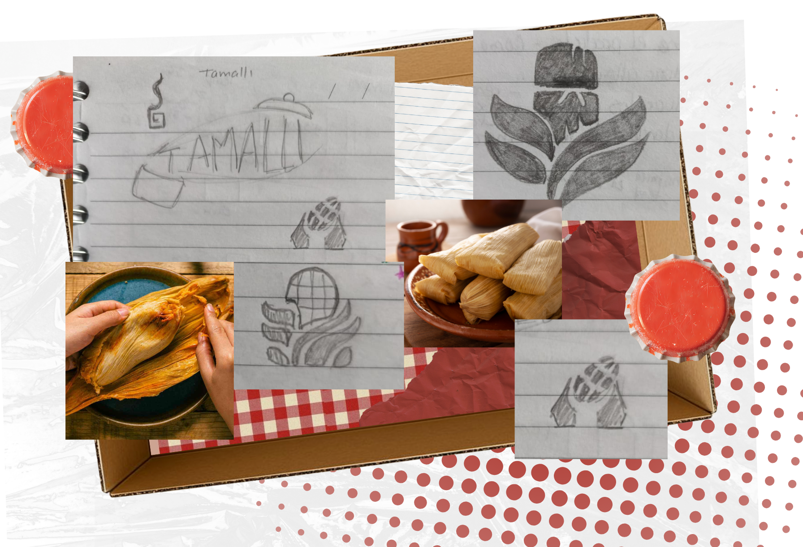
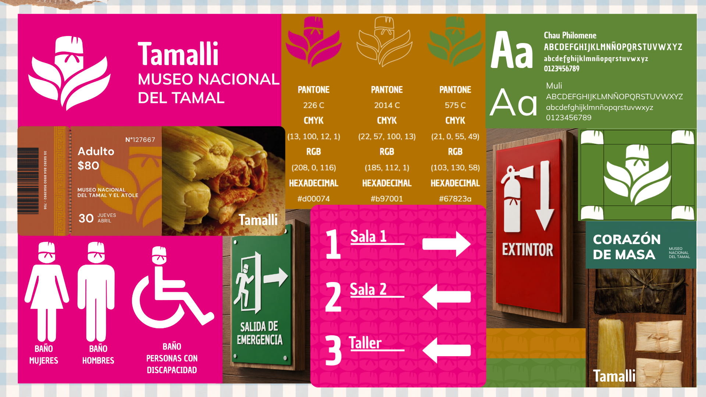
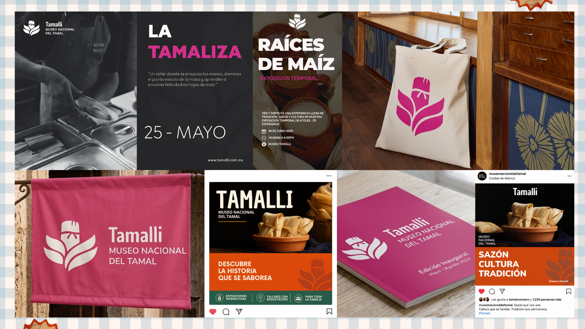

Branding
Yomalli
Unidad de Manejo para la Conservación de la Vida Silvestre (UMA)
Brief
Diseño de identidad visual para Yomalli, una marca enfocada en la conservación, protección y divulgación de los reptiles venenosos de México.
El logotipo está conformado por un dragón que funciona como símbolo de protección, sabiduría y fuerza.
Herramientas
Adobe Illustrator
Adobe InDesign
Diseño de idea
El nombre Yomalli surge de la unión de las palabras náhuatl Yollotl (corazón) y Chimalli (escudo), representando la idea de “un corazón que protege”.
Tipo de proyecto
Proyecto educativo

Identidad visual de Yomalli

Identidad visual de Yomalli

Identidad visual de Yomalli

Identidad visual de Yomalli

Identidad visual de Yomalli

tamalli
Museo Nacional del Tamal
Brief
Diseño de identidad visual para el Museo Nacional del Tamal, un proyecto educativo y cultural dedicado a difundir la historia, tradición y valor gastronómico del tamal en México.
El logotipo está construido a partir de la integración visual del maíz y la silueta de un tamal.
Herramientas
Adobe Illustrator
Adobe InDesign
Adobe Photoshop
Diseño de idea
El nombre Tamalli proviene del vocablo náhuatl tamalli, cuyo significado es “envuelto” o “envuelto cuidadosamente”
Tipo de proyecto
Proyecto educativo

Identidad visual de Yomalli

Identidad visual de Yomalli
